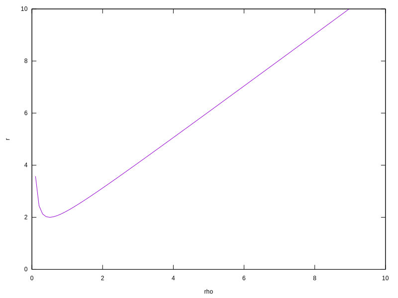

Photons
Light travels in a straight line. Let's represent the position of a particle of light as $x^\mu$, for $\mu$ running over indexes 0, 1, 2, 3.
$x^0 = t$ will represent the time of the particle as recorded from a stationary observer. $x^i$, for i running 1 through 3, will represent the coordinate in 3D space of the particle.
$x^1$ will represent the x coordinate, $x^2 = y$, and $x^3 = z$.
Let $\tau$ represent the particle's local time.
The change in the light particle's position (in space and time) relative to the observer with respect to the change in the particle's local time can be represented as ${d \over {d\tau}} x^\mu$, or ${\dot x}^\mu$ for short.
This is the velocity in the observer's rest frame.
This appearance of velocity is only present to the observer, of course.
To the particle of light in its own rest frame, it is existing in all locations from its origin to its destination simultaneously.
For more on that check out the page on
time dilation.
The Line Element
Turns out the spacetime that light travels through is not flat, but curved.
Curved geometry is described in terms of its line element $ds^2 = g_{\mu\nu} dx^\mu dx^\nu $.
The symbol $g_{\mu\nu}$ is the metric tensor and describes how the curved surface deforms lines drawn along the surface.
This line element description comes from the following:
$ds^2 = g_{\mu\nu} dx^\mu dx^\nu $
$ ds^2 = g_{\mu\nu} {dx^\mu \over d\tau} {dx^\nu \over d\tau} {d\tau}^2 $
$ ds = \sqrt{g_{\mu\nu} {\dot x}^\mu {\dot x}^\nu} d\tau $
$ \int ds = \int \sqrt{g_{\mu\nu} {\dot x}^\mu {\dot x}^\nu} d\tau $
$ s = \int \sqrt{g_{\mu\nu} {\dot x}^\mu {\dot x}^\nu} d\tau $
This equation looks awfully familiar to the arclength equation.
Turns out if we have a coordinate chart to describe the curved surface that the line lies upon then we can simplify the math even further.
Let $ {\vec{r}}(x^\mu) $ be that coordinate chart.
Then we can define $g_{\mu \nu} = {{d\vec{r}} \over {dx^\mu}} \cdot {{d\vec{r}} \over {dx^\nu}} $ and get a clearer definition:
$ s = \int \sqrt{ {d{\vec{r}} \over {dx^\mu}} \cdot {d{\vec{r}} \over {dx^\nu}} {dx^\mu \over d\tau} {dx^\nu \over d\tau}} d\tau $
$ s = \int \sqrt{ {d{\vec{r}} \over {dx^\mu}} {dx^\mu \over d\tau} \cdot {d{\vec{r}} \over {dx^\nu}} {dx^\nu \over d\tau}} d\tau $
$ s = \int \sqrt{ {d{\vec{r}} \over {d\tau}} \cdot {d{\vec{r}} \over {d\tau}} } d\tau $
$ s = \int \sqrt{ ||{d\vec{r} \over d\tau}||^2 } d\tau $
$ s = \int ||{d\vec{r} \over d\tau}|| d\tau $
And there you have the arclength equation recovered from the line element equation.
Notice that a coordinate chart is not always available for every metric, which is one reason why the line element definition is more popular.
The Geodesic Equation
So how does one find the coordinates of path that light travels through a curved spacetime? Enter the world of geodesics.
Geodesics calculate the path that a straight line takes over an arbitrarily curved surface.
The geodesic equation is described as
$ {\ddot x}^\mu + {\Gamma^\mu}_{\alpha \beta} {\dot x}^\alpha {\dot x}^\beta = 0 $
where $ {\Gamma^\mu}_{\alpha \beta} $ is the Christoffel Symbol of the Second Kind.
The Christoffel Symbol of the Second Kind can be defined as $ {\Gamma^\alpha}_{\beta\gamma} = g^{\alpha\mu} \Gamma_{\mu\beta\gamma} $,
for $g^{\alpha\mu}$ the inverse of the metric tensor and for $ {\Gamma_{\mu\beta\gamma}} $ the Christoffel Symbol of the First Kind.
The Christoffel Symbol of the First Kind is then defined as $ \Gamma_{\alpha\beta\gamma} = {1 \over 2} (g_{\alpha\beta,\gamma} + g_{\alpha\gamma,\beta} - g_{\beta\gamma,\alpha})$
for comma derivative shorthand $g_{\alpha\beta,\gamma} = {{d g_{\alpha\beta}} \over {d {x^\gamma}}}$.
One of a few ways to derive the geodesic equation is to extremalize the action of the arclength (squared):
Let $ I = \int g_{\mu \nu} {\dot x}^\mu {\dot x}^\nu d\tau $ and then solve for $ {{\delta I} \over {\delta x^\alpha}} = 0$.
$ I = \int g_{\mu\nu} {\dot x}^\mu {\dot x}^\nu d\tau $
$ \delta I = \delta \int g_{\mu\nu} {\dot x}^\mu {\dot x}^\nu d\tau $
$ \delta I = \int ( \delta g_{\mu\nu} {\dot x}^\mu {\dot x}^\nu + g_{\mu\nu} (\delta {\dot x}^\mu {\dot x}^\nu + {\dot x}^\mu \delta {\dot x}^\nu) ) d\tau $
Next we use integration by parts and disregard the newly created total integrals: $ \int u dv = uv - \int v du $ for $ uv = 0 $
$ \delta I = \int ( \delta g_{\mu\nu} {\dot x}^\mu {\dot x}^\nu - \delta x^\mu ({\dot g}_{\mu\nu} {\dot x}^\nu + g_{\mu\nu} {\ddot x}^\nu) - \delta x^\nu ({\dot g}_{\mu\nu} {\dot x}^\mu g_{\mu\nu} {\ddot x}^\mu) ) d\tau $
$ \delta I = \int ( \delta g_{\mu\nu} {\dot x}^\mu {\dot x}^\nu - \delta x^\nu ({\dot g}_{\nu\mu} {\dot x}^\mu + g_{\nu\mu} {\ddot x}^\mu) - \delta x^\nu ({\dot g}_{\mu\nu} {\dot x}^\mu + g_{\mu\nu} {\ddot x}^\mu) ) d\tau $
$ \delta I = \int ( \delta g_{\mu\nu} {\dot x}^\mu {\dot x}^\nu - 2 \delta x^\nu ({\dot g}_{\mu\nu} {\dot x}^\mu + g_{\mu\nu} {\ddot x}^\mu) ) d\tau $
$ {{\delta I} \over {\delta x^\sigma}} = \int ( {{\delta g_{\mu\nu}} \over {{\delta x}^\sigma}} {\dot x}^\mu {\dot x}^\nu - 2 \delta^\mu_\sigma ({\dot g}_{\mu\nu} {\dot x}^\nu + g_{\mu\nu} {\ddot x}^\nu ) ) d\tau $
$ {{\delta I} \over {\delta x^\sigma}} = \int ( {{\delta g_{\mu\nu}} \over {\delta x^\sigma}} {\dot x}^\mu {\dot x}^\nu - 2 ({\dot g}_{\sigma\nu} {\dot x}^\nu + g_{\sigma\nu} {\ddot x}^\nu) ) d\tau $
$ g^{\alpha\sigma} {{\delta I} \over {\delta x^\sigma}} = \int ( g^{\alpha\sigma} {{\delta g_{\mu\nu}} \over {\delta x^\sigma}} {\dot x}^\mu {\dot x}^\nu - 2(g^{\alpha\sigma} {\dot g}_{\sigma\nu} {\dot x}^\nu + {\ddot x}^\alpha) ) d\tau $
Now solve for $ {{\delta I} \over {\delta x^\sigma}} = 0 $
$ {\ddot x}^\alpha + g^{\alpha\sigma} {\dot g}_{\sigma\beta} {\dot x}^\beta - {1 \over 2} g^{\alpha\sigma} {{\delta g_{\beta\gamma}} \over {\delta x^\sigma}} {\dot x}^\beta {\dot x}^\gamma = 0 $
$ {\ddot x}^\alpha + g^{\alpha\sigma} {\dot g}_{\sigma\beta} {\dot x}^\beta - {1 \over 2} g^{\alpha\sigma} {{\delta g_{\beta\gamma}} \over {\delta x^\sigma}} {\dot x}^\beta {\dot x}^\gamma = 0 $
$ {\ddot x}^\alpha + g^{\alpha\sigma} ({{dg_{\sigma\beta}} \over {dx^\gamma}} {\dot x}^\gamma {\dot x}^\beta - {1 \over 2} g^{\alpha\sigma} {{dg_{\beta\gamma}} \over {dx^\sigma}} {\dot x}^\beta {\dot x}^\gamma) = 0 $
$ {\ddot x}^\alpha + g^{\alpha\sigma} (g_{\sigma\beta,\gamma} - {1 \over 2} g_{\beta\gamma,\sigma}) {\dot x}^\beta {\dot x}^\gamma = 0 $
$ {\ddot x}^\alpha + {1 \over 2} g^{\alpha\sigma} (g_{\beta\sigma,\gamma} + g_{\sigma\beta,\gamma} - g_{\beta\gamma,\sigma}) {\dot x}^\beta {\dot x}^\gamma = 0 $
$ {\ddot x}^\alpha + g^{\alpha\sigma} \Gamma_{\sigma\beta\gamma} {\dot x}^\beta {\dot x}^\gamma = 0 $
$ {\ddot x}^\alpha + {\Gamma^\alpha}_{\beta\gamma} {\dot x}^\beta {\dot x}^\gamma = 0 $
The geodesic equation gives us a relation between the first and second derivatives of the coordinates our test particle travelling along the geodesic.
The coefficients of the relation stored in $ {\Gamma^\mu}_{\alpha \beta} $ are derived from the metric, its inverse, and its first derivative.
The metric itself is based on the particle position $x^\mu$.
In the end we get a formula for computing ${\ddot x}^\mu$ based on the $x^\mu$ and ${\dot x}^\mu$.
Tracing Rays
Once we have these relations we can approximate them by simulating the position and velocity of light particles at arbitrary samples on the screen.
The positions and velocities are updated using your favorite numeric integration method with the following equations:
$ {d \over {d\tau}} \left[ \matrix { x^\mu \\ {\dot x}^\mu } \right]
= \left[ \matrix{ {\dot x}^\mu \\ {\ddot x}^\mu } \right]
= \left[ \matrix{ {\dot x}^\mu \\ -{\Gamma^\mu}_{\alpha \beta} {\dot x}^\alpha {\dot x}^\beta } \right]
$.
Schwarzschild Geodesic
The Schwarzschild metric describes the curvature of spacetime around a spherical object.
The Schwarzschild metric in spherical coordinates is $ ds^2 = -(1 - {2 M \over r}) {dt}^2 + (1 - \frac{2 M}{r} )^{-1} dr^2 + r^2 (d\theta^2 + sin(\theta)^2 d\phi^2) $ for M the mass of the object.
In isotropic Cartesian coordinates it is given as $ ds^2 = -\left( \frac{1-\frac{M}{2\rho}}{1+\frac{M}{2\rho}} \right)^2 dt^2 + \left( 1 + \frac{M}{2\rho} \right)^4 (dx^2 + dy^2 + dz^2)$,
where $r = \rho (1 + \frac{M}{2\rho})^2$.

Kerr Geodesic
The Kerr metric describes the curvature of spacetime around a spherical rotating object.
The metric is given as $ {ds}^2 = -{dt}^2 + {dx}^2 + {dy}^2 + {dz}^2 + {2mr^3 \over {r^4 + a^2 z^2}} (dt + {{rx+ay}\over{a^2+r^2}} dx + {{ry-ax}\over{a^2+r^2}} dy + {z \over r} dz)^2 $
for the mass $m$, angular acceleration $a$, and $r$ is defined by $ x^2 + y^2 + z^2 = r^2 + a^2 (1 - {z^2 \over r^2}) $.
Alcubierre Warp Bubble Geodesic
The Alcubierre warp bubble metric describes the curvature of spacetime around a warp bubble.
The metric is given as $ {ds}^2 = ({v_s}^2 f(r_s(t))^2 - 1) {dt}^2 - 2 v_s f(r_s) {dx} {dt} + {dx}^2 + {dy}^2 + {dz}^2 $
for $ f(r_s) = (tanh(\sigma(r_s + R)) - tanh(\sigma(r_s - R))) / (2 tanh(\sigma R)) $,
$r_s = \sqrt{(x - x_s)^2 + y^2 + z^2} $,
$x_s$ the warp bubble distance,
$v_s$ the warp bubble velocity,
R the warp bubble radius,
and $ \sigma $ the warp bubble thickness.